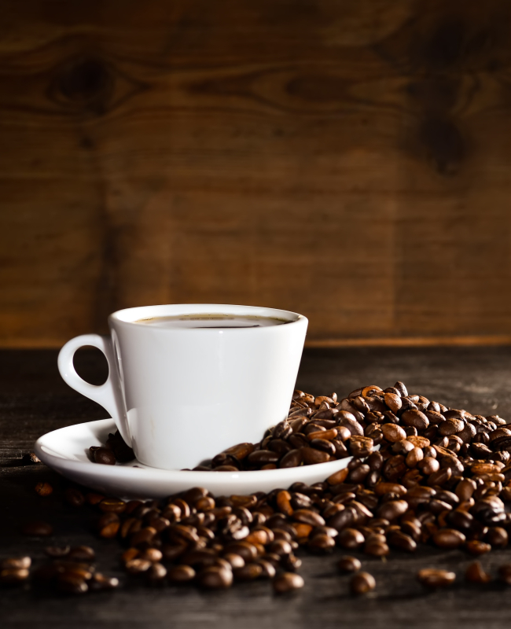

Start the morning with a freshly brewed cup of coffee using your favorite whole beans!
Lavazza |
Amazon |
Peets |
Starbucks Pike's Place |
San Francisco Bay |
illy- Dark Roast |
Blue Bottle Organic |
Mayorga - Dark |
Brooklyn Coffee |